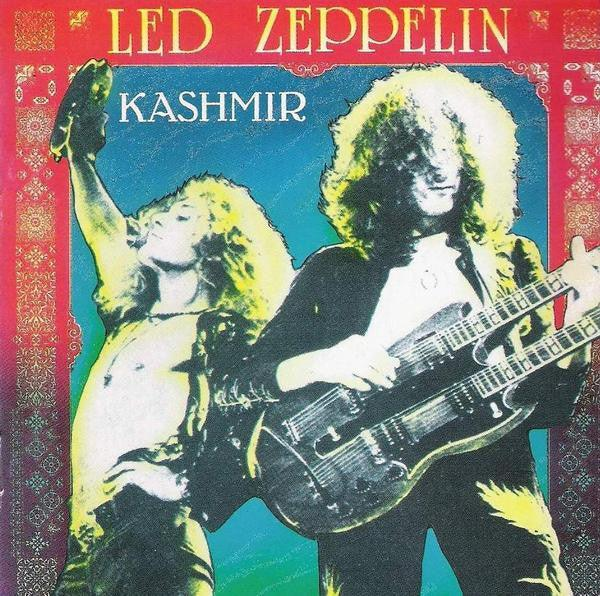

Album Physical Graffiti

Songs:
Custard Pie
The Rover
In My Time of Dying
Houses of the Holy
Trampled Under Foot
Kashmir
In the Light
Bron-Yr-Aur
Most played song Kashmir from the album Physical Graffiti
Realeased: 1975
Tillbaka